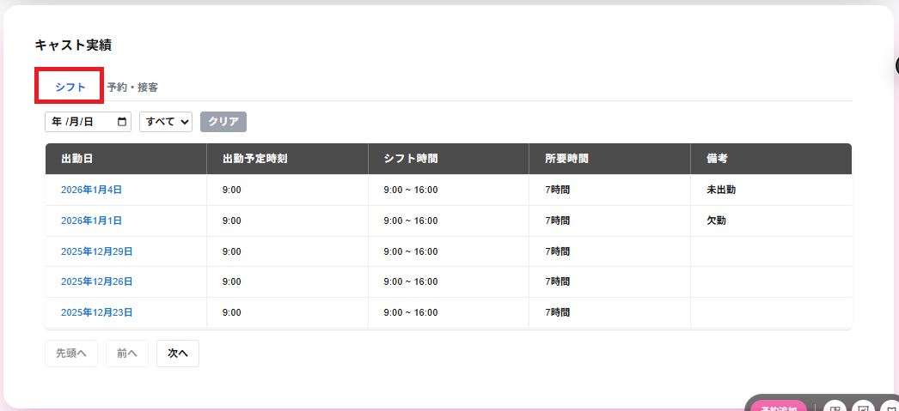

シフトのタブを選択すると、以下の項目が表示され、シフトを一覧で表示、またはシフトを絞り込んで表示することができます。
キャスト実績の画面には以下の項目が一覧で表示されます。
・出勤日
出勤の年月日が表示されます。
・出勤予定時刻
出勤予定時刻が表示されます。
・シフト時刻
シフトの開始時刻と終了時刻が表示されます。
・所要時刻
シフトの所要時刻が表示されます。
・備考
未出勤の場合は未出勤と表示されます。
欠勤の場合は欠勤と表示されます。
上記以外の場合は-と表示されます。
・年 /月/日
年 /月/日をクリックし、任意の年月日を選択すると、選択した年 /月/日の予シフトのみが表示されます。
・未出勤・欠勤(セレクトボックス)
未出勤・欠勤(セレクトボックス、初期値はすべて)をクリックすると、すべて・未出勤・欠勤を選択できます。
すべてを選択した場合は未出勤・欠勤・出勤済みが一覧で表示されます。
未出勤を選択した場合は未出勤のみが一覧で表示されます。
欠勤を選択した場合は欠勤のみが一覧で表示されます。
・クリア
年 /月/日・未出勤・欠勤(セレクトボックス)の絞込みをすべて解除できます。
表示された行をクリックすることで、シフト詳細が表示されます。
